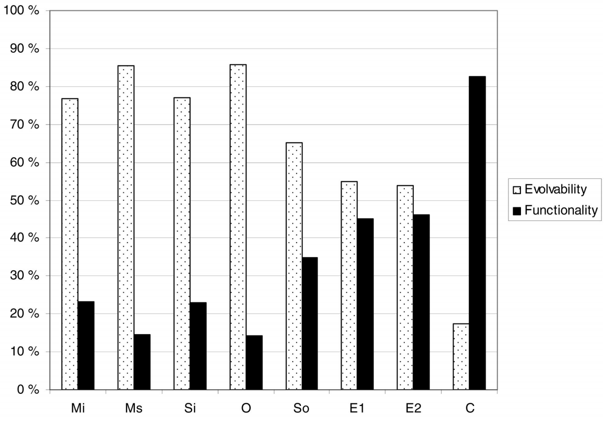

What’s in this paper?
• 75% of defects found in code reviews affect software evolvability rather than functionality.
• Analyzes of over 700 issues found in code reviews.
• Defect types of previous studies are re-analyzed to provide conclusive evidence.
• Code reviews are most valuable for software products or services with long life cycles
Abstract
Research on code reviews has often focused on defect counts instead of defect types, which offers an imperfect view of code review benefits. In this paper, we classified the defects of nine industrial (C/C++) and 23 student (Java) code reviews, detecting 388 and 371 defects, respectively. First, we discovered that 75 percent of defects found during the review do not affect the visible functionality of the software. Instead, these defects improved software evolvability by making it easier to understand and modify. Second, we created a defect classification consisting of functional and evolvability defects. The evolvability defect classification is based on the defect types found in this study, but, for the functional defects, we studied and compared existing functional defect classifications. The classification can be useful for assigning code review roles, creating checklists, assessing software evolvability, and building software engineering tools.We conclude that, in addition to functional defects, code reviews find many evolvability defects and, thus, offer additional benefits over execution-based quality assurance methods that cannot detect evolvability defects. We suggest that code reviews may be most valuable for software products with long life cycles as the value of discovering evolvability defects in them is greater than for short life cycle systems.
Appendix
Further description of the defect types with examples (figshare, author's website)
Ref
Mäntylä, M. V. and Lassenius, C. "What Types of Defects Are Really Discovered in Code Reviews?" IEEE Transactions on Software Engineering, vol. 35, no 3, May/June 2009, pp. 430-448 <doi>, pdf
{kind=link}